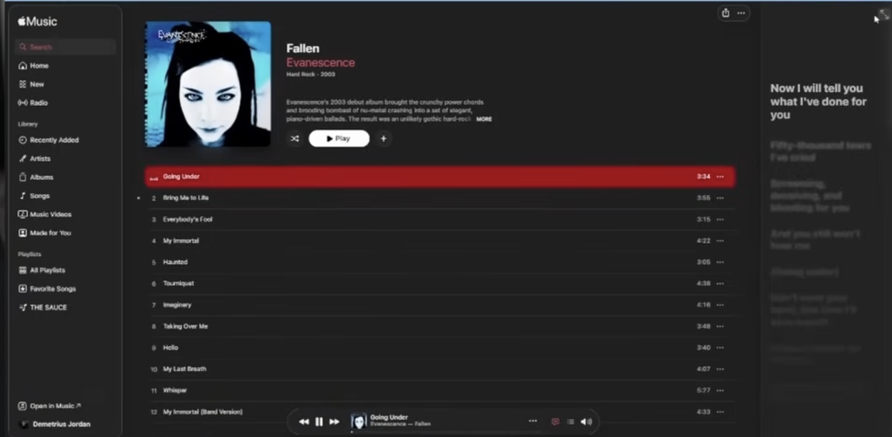
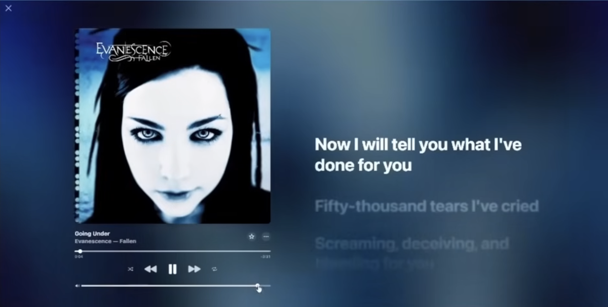

◆
Curated metadata
Clean up titles, artists, albums, release years, genres, confidence, official links, and useful track profile details.
Melodex turns scattered tracks into a clean, searchable library with album art, lyrics, AI-assisted metadata, track profiles, queues, and a player built for people who actually keep their music.
Desktop app vibe. Local library control. Optional enrichment when you want it.

Melodex uses the dark, focused interface of the desktop app itself: dense where it should be, readable where it matters, and fast enough for a real library.
Clean up titles, artists, albums, release years, genres, confidence, official links, and useful track profile details.
Browse artists, albums, songs, lyrics, queues, video, and profile notes without losing the currently playing track.
Your library stays yours. Melodex is designed around local files, local folders, and transparent enrichment workflows.
Import audio, clean source clutter, enrich track data, attach artwork, match lyrics, and keep everything in a predictable Artist / Album / Song structure.
